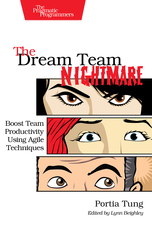

The Dream Team Nightmare
En el viaje al FOSDEM que realizamos el pasado mes de Febrero (podéis encontrar la crónica del viaje aquí) siempre es visita obligatoria el stand de O'Reilly para aprovechar el descuento que se aplica por comprar en el Fosdem y hacerme con alguna pequeña joya.
La vista siempre se me va hacia libros de temática relacionada con mi bien amado Linux, pero últimamente también estoy cayendo en libros relacionados con Agile, DevOps, Metodologías de gestión de proyectos y equipos, etc... De entre todos los libros que me llamaron la atención encontré uno que destacó, primero por su temática (Agile) y luego por su formato.
El libro del que os estoy hablando es The Dream Team Nightmare
Lo primero que me llamó la atención es el título: The Dream Team Nightmare. Me resultó gracioso y no puede dejar de encontrar similitudes con mis últimas experiencias profesionales (que ya contaremos en otra ocasión), pero pronto me puse a la defensiva. ¿Qué se escondía detrás de tal título? ¿Quizás otro libro del estilo The Phoenix Project ? No me mal interpretéis, The Phoenix Project me parece un libro genial, nos explica diferentes técnicas y ejemplos de aplicación práctica, pero llegados a cierto punto de la historia, ésta se me hizo pesada y bastante poco creíble.
Empecé a ojear el libro con bastante escepticismo, pero a la que pasé tres hojas no podía creer lo que estaba viendo: la autora (Portia Tung) había planteado una historia al mítico estilo de libros "Elige tu propia aventura" que tantas veces había leido cuando era un crío. Ése fué el factor determinante para acabar de convencerme de comprar el libro.
La historia nos presenta como un consultor (coach) Agile, al qué una empresa ha contratado para hacer que uno de sus equipos con más problemas entregue su proyecto a tiempo. Nos irá poniendo en diversas situaciones y tendremos que ir tomando decisiones. En función de las decisiones que tomemos, conseguiremos, o no, nuestro objetivo. A diferencia de los libros de "Elige tu propia aventura" hay más de un nivel de éxito o fracaso, es decir, podemos cumplir nuestro objetivo completamente, parcialmente o fallar de manera estrepitosa y poner en riesgo nuestra carrera. Esto facilita que leamos el libro varias veces y vayamos aprendiendo de nuestros errores y veamos que técnicas son mejores de aplicar en cada caso.
Para todos aquellos que quieran poner en práctica sus conocimientos de Agile es una lectura más que recomendable que se hace amena e incluso divertida.